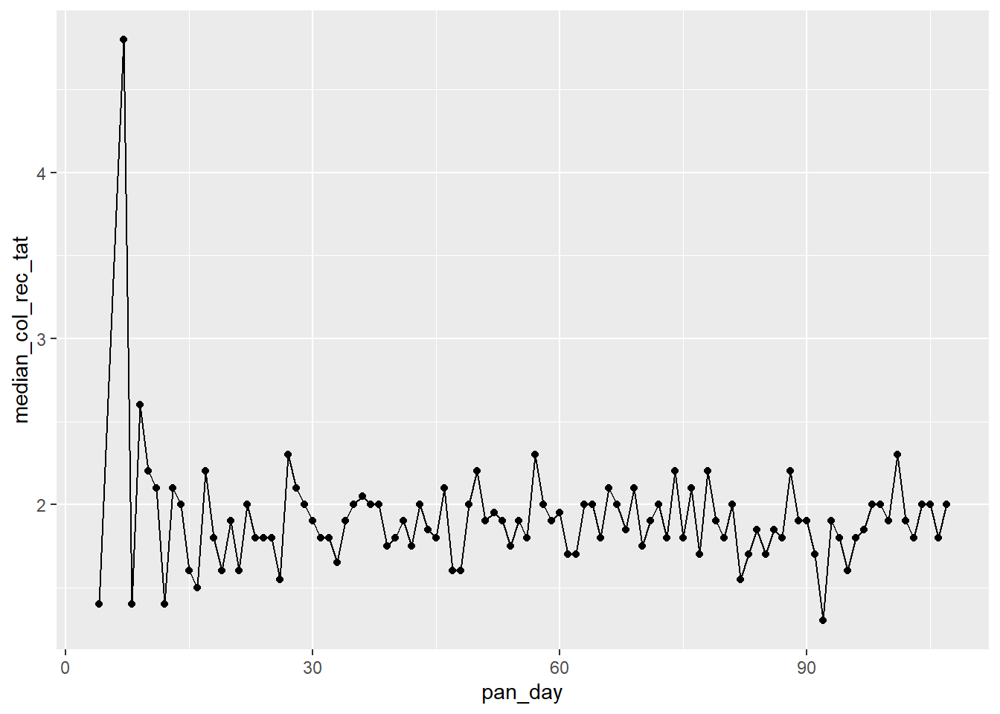

14 Solutions || Medical Data
suppressPackageStartupMessages(library(ggplot2))
suppressPackageStartupMessages(library(medicaldata))
suppressPackageStartupMessages(library(dplyr))
suppressPackageStartupMessages(library(tidyr))Use the covid_testing data set and everything you’ve learned so far to answer the following questions:
14.1 Clinics included
How many clinics participated in the study, and how many valid tests were performed on each one? Did the testing trend vary over time?
14.1.1 Number of clinics
clinics<- covid %>%
dplyr::select(subject_id,clinic_name,result,pan_day) %>%
dplyr::distinct()
length(unique(clinics$clinic_name))## [1] 8814.1.2 Number of valid tests
clinics %>%
dplyr::filter(result!="invalid") %>%
dplyr::group_by(clinic_name) %>%
dplyr::summarize(n_test = length(clinic_name)) %>%
dplyr::arrange(desc(n_test))## # A tibble: 88 × 2
## clinic_name n_test
## <chr> <int>
## 1 clinical lab 7397
## 2 emergency dept 3353
## 3 oncology day hosp 509
## 4 nicu 285
## 5 laboratory 262
## 6 picu 258
## 7 care ntwk 231
## 8 line clinical lab- 218
## 9 inpatient ward a 207
## 10 radiation oncology 161
## # ℹ 78 more rows14.2 Number of positive tests
How many patients tested positive vs negative in the first 100 days of the pandemic? Do you notice any difference with the age of the patients? Hint: You can make two age groups and calculate the percentage each age group in positive vs negative tests.
14.2.1 Number of positive tests in the first 100 days
covid %>%
filter(result!="invalid" & pan_day<=100) %>%
group_by(result) %>%
summarize(n=length(subject_id))## # A tibble: 2 × 2
## result n
## <chr> <int>
## 1 negative 13225
## 2 positive 78014.2.2 Tests by age group
tsts_age<-covid %>%
filter(result!="invalid" & pan_day<=100) %>%
mutate(age_group=ifelse(age<=21,"children","adults")) %>%
group_by(age_group,result) %>%
summarize(n=length(subject_id)) %>%
mutate(percent_total=n/sum(n)*100)## `summarise()` has grouped output by 'age_group'. You can override using the `.groups` argument.## # A tibble: 4 × 4
## # Groups: age_group [2]
## age_group result n percent_total
## <chr> <chr> <int> <dbl>
## 1 adults negative 2627 92.1
## 2 adults positive 226 7.92
## 3 children negative 10598 95.0
## 4 children positive 554 4.9714.3 Processing times
Look at the specimen processing time to receipt, did the sample processing times improve over the first 100 days of the pandemic? Plot the median processing times of each day over the course of the pandemic and then compare the summary statistics of the first 50 vs the last 50 days
covid %>%
group_by(pan_day) %>%
dplyr::summarise(median_col_rec_tat=median(col_rec_tat)) %>%
ggplot(.,aes(x=pan_day,y=median_col_rec_tat)) +
geom_point()+
geom_line()
covid %>%
mutate(pan_day_group=ifelse(pan_day<50,"first_50","last_50")) %>%
group_by(pan_day_group) %>%
dplyr::summarise(mean_col_rec_tat=mean(col_rec_tat),
median_col_rec_tat=median(col_rec_tat),
min_col_rec_tat=min(col_rec_tat),
max_col_rec_tat=max(col_rec_tat))## # A tibble: 2 × 5
## pan_day_group mean_col_rec_tat median_col_rec_tat min_col_rec_tat max_col_rec_tat
## <chr> <dbl> <dbl> <dbl> <dbl>
## 1 first_50 3.26 1.9 0 865.
## 2 last_50 9.41 1.9 0 61370.